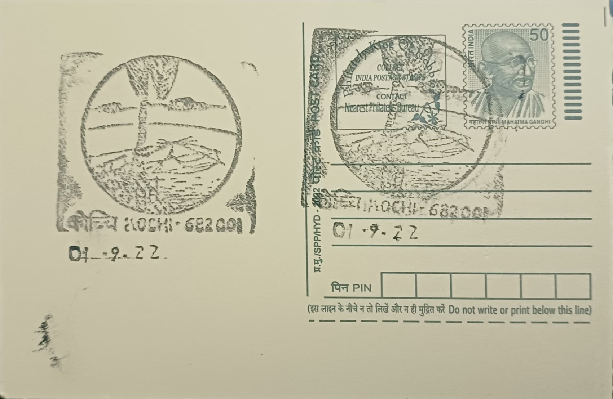

Chinese Fishing Net
ചൈനീസ് മീൻപിടിത്ത വല


The Chinese fishing nets of Kochi, locally called cheena vala, take their name directly from their disputed but widely repeated origin: tradition holds that the design reached the Malabar coast through contacts with the court of the Mongol ruler Kublai Khan, with some local accounts specifically crediting the Ming-era admiral Zheng He's voyages to the region sometime between the 14th and 15th centuries, while a competing strand of local lore credits Portuguese traders who had themselves observed similar lift-net designs during earlier travels in East Asia. No single account is definitively proven, and the nets' Malayalam name itself simply records the foreign, China-linked association rather than settling the historical question.
As a fishing technology, the cheena vala belongs to a category known technically as a shore-operated stationary lift net, a fixed land-based installation rather than a boat-based gear, and this fixes its core significance: Fort Kochi is counted among the very few places in the world where the method survives in regular, non-ceremonial use. Beyond their working function, the nets have become inseparable from Kochi's identity as a historic trading port, standing today as both a small-scale fishing livelihood and one of the most photographed waterfront sights on India's southwestern coast, drawing visitors specifically to watch the slow, rhythmic raising and lowering of the nets at the harbour mouth.
Each installation is built from teak-wood and bamboo poles lashed into a cantilevered frame, typically standing at least ten metres high, with a horizontal net spread of roughly twenty metres suspended at one end over the water. Balance is achieved through a counterweight system rather than engines: large stones, commonly around thirty centimetres across, are tied to ropes of varying lengths at the opposite end of the cantilever, so that the mere shifting weight of a crew member walking the main plank is sufficient to tip the frame and submerge the net. A crew of four or more fishermen typically works each net in shifts, hauling the counter-ropes to lift the net after a short interval of submersion, usually during the low-light hours of early morning and evening when fish move close to the shallows.
Fort Kochi once had as many as seventeen of these fixed nets strung along its shoreline, a number that has fallen to roughly eight still standing and operated today, a decline attributed to the cost of upkeep, dwindling catches, and competition from modern fishing methods. Among the survivors, a handful are counted among the largest such lift nets anywhere, requiring larger crews and heavier counterweight stones to manage safely, and their continued operation alongside the much-reduced total has made each remaining net something of an individually recognised fixture along the promenade rather than one of an anonymous row.
The nets today sit within a waterfront shaped successively by Arab, Chinese, Portuguese, Dutch, and British trading interests, and their upkeep now falls largely to the fishing families who operate them, often supplementing income by selling the day's catch directly to visitors or charging a token fee to onlookers who want a closer view of the lift in action. Local and state tourism bodies have in recent years flagged the surviving nets for conservation attention given their shrinking numbers, even as no nets have been added to replace those lost. Fishermen continue to work the Fort Kochi shoreline each morning and evening much as their predecessors did, making the cheena vala one of the rare working fisheries in India that functions simultaneously as a living trade and a visitor attraction.
| Date of Introduction | August 21, 1998 |
|---|---|
| Address | Senior Postmaster, |
| Kochi HO, | |
| Ernakulam (dt.), Kerala - 682001. |